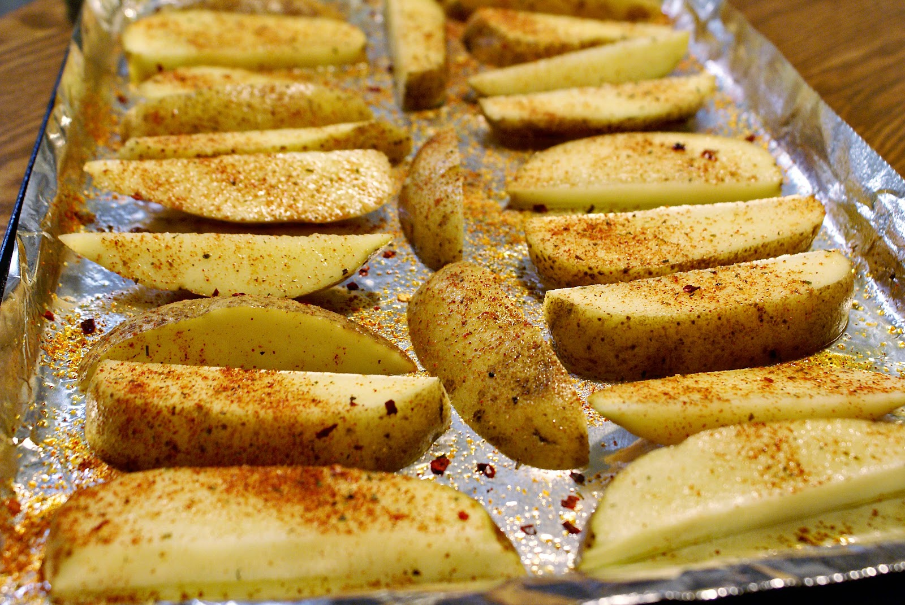

Step 2: Begin by chopping the potatoes into one half to three quarter inch dice and placing them into a baking dish large enough to later lay the fish fillets side by side. Add one tablespoon of the oil, half the rosemary and mix well to coat, then add salt and pepper to taste.
